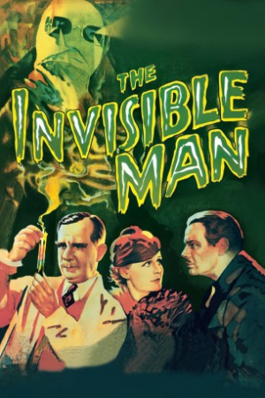
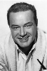

Country:United States, 71 minutes
Spoken languages:English
Genres:Horror, Sci-Fi
Director(s):James Whale
Writer(s):H.G. Wells, Philip Wylie, Preston Sturges, R.C. Sherriff
Video Codec:Unknown
Number: 2701


Certification:NR
Storyline:
Working in Dr. Cranley's laboratory, scientist Jack Griffin was always given the latitude to conduct some of his own experiments. His sudden departure, however, has Cranley's daughter Flora worried about him. Griffin has taken a room at the nearby Lion's Head Inn, hoping to reverse an experiment he conducted on himself that made him invisible. But the experimental drug has also warped his mind, making him aggressive and dangerous. He's prepared to do whatever it takes to restore his appearance.
Cast: 


Medium: Original DVD,
Comments: Part of: Universal Studios Classic Monster Collection
Loaned: No
Aspect ratio: Unknown